Book-keeper to the company, holder of the licensed book.
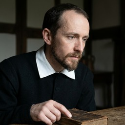
Alderman, Quiney's ally, a scholarly man of malt and Cicero.
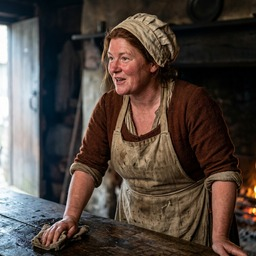
Hostess of the Jackdaw in Holywell Lane.
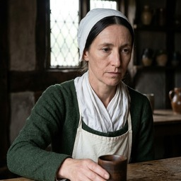
Keeper of the Split Hazel, near Bishopsgate.
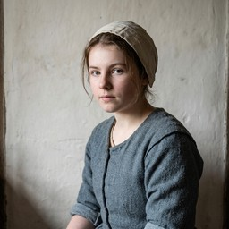
Mistress Ansell's maid, sixteen, from Hertfordshire.
Gentleman usher to the Lord Chamberlain.
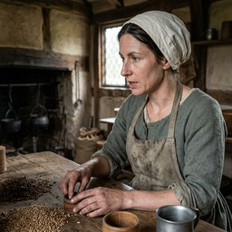
Anne Shakespeare, his wife, at Henley Street.
Second boy, lodged with Thomas Pope. Plays Rosaline and Lady Capulet.
Sharer and musician. Master of Sam Latchet.
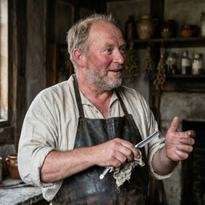
Barber-surgeon in Bishopsgate. Draws the tooth in October.
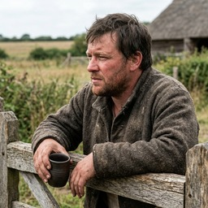
Anne's brother, a farmer at Hewlands in Shottery.
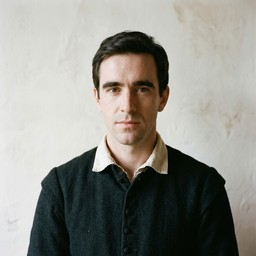
The business son. Gatherers, repairs, and the letters to Giles Allen.
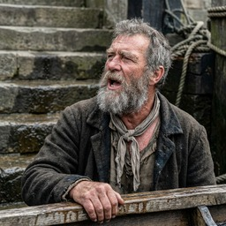
His waterman at Old Swan Stairs.
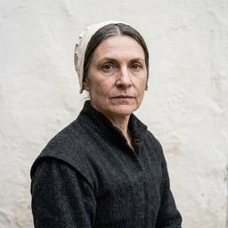
His landlady at Mistress Ansell's house.
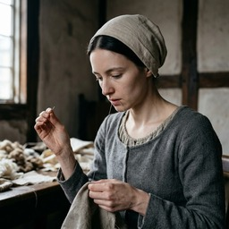
Seamstress and mender to the company.
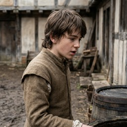
Youngest brother, at Henley Street. Not in the company this year.
Master of the Revels. Licenses the plays.
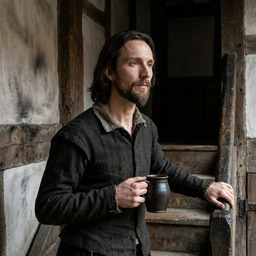
The Rose's star, Admiral's Men. Six foot, mild offstage.
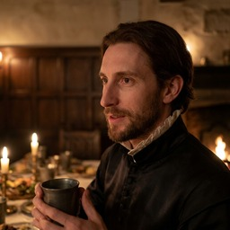
Host at Canon Row. Hunsdon's son-in-law.
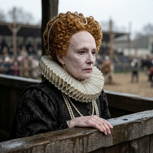
The queen. Seen, almost never heard.
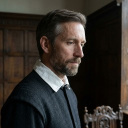
Sharer. The company's ambassador in a great chamber.
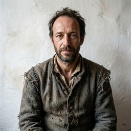
Playwright. Seen on Accession Day with a manuscript under his arm.
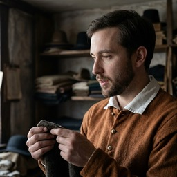
Brother. A haberdasher lodging in St Bride's.
Ground landlord of the Theatre. William sees him once and never speaks with him.
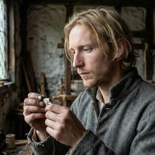
Fellow lodger. A Flemish silk-weaver.
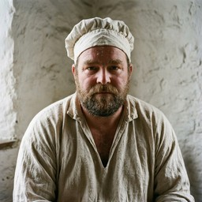
Baker on the High Street. The twins' godfather.
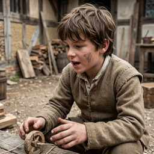
His son, ten. Loud, kind, a runner.
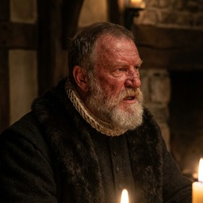
The Lord Chamberlain, his patron. Sixty-nine.
Earl of Southampton, 22. Dedicatee of both poems.
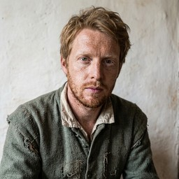
Hired player, gatherer, and second copyist under Garnish.
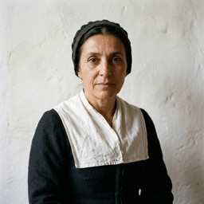
Richard Field's wife. Runs the shop's accounts.
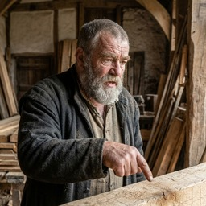
Owner of the Theatre. Father of Richard and Cuthbert.
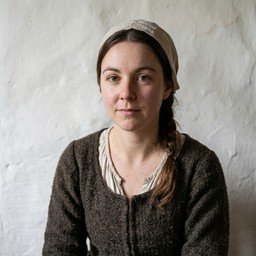
His sister. Runs the kitchen with Mary and spins.
Italian tutor and lexicographer in the Earl of Southampton's household.
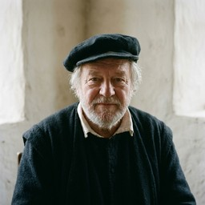
Publisher at the White Greyhound. Holds Venus and Lucrece.
Sharer. Holds the stock. Nick lodges in his house.
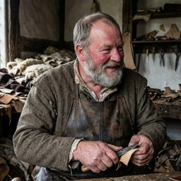
His father. Glover and whittawer at Henley Street.
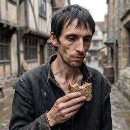
Hired man. Cast when a part needs a walking famine.
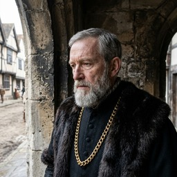
Lord Mayor until 28 October. Lives at Crosby Place.
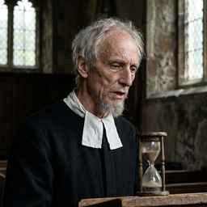
Reader and curate at St Helen's.
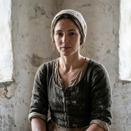
The baker's wife. The twins' godmother.
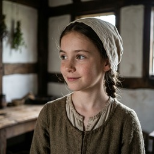
His younger daughter, ten. Hamnet's twin.
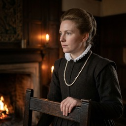
Hostess at Canon Row. Hunsdon's daughter, Hoby's wife.
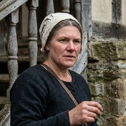
Gatherer at the gallery stair. Knows every face and what it paid.
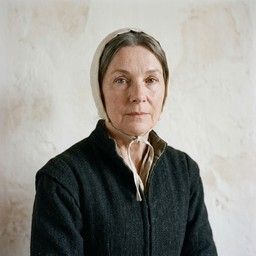
His mother, Mary Arden, at Henley Street.
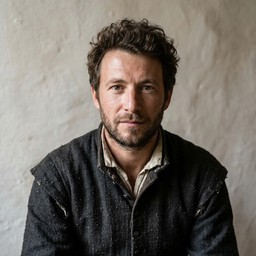
A Warwickshire poet at Paul's. Not the Rival Poet.
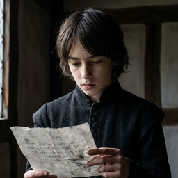
Leading boy, bound to Heminges. Plays Juliet and the queens.
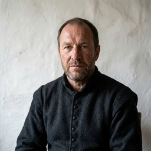
Dyer, pawnbroker, and owner of the Rose.
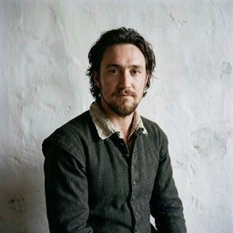
Leading player and sharer. Berowne, Richard, Romeo.
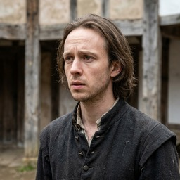
Hired player, not a sharer. Kemp's straight man.
Printer at Blackfriars. Printed Venus and Lucrece.
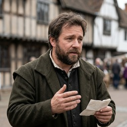
Mercer and borough man. A tireless civic fixer.
Brother. Works the glove shop with his father.
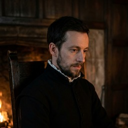
Privy Councillor. Silent at Hoby's supper.
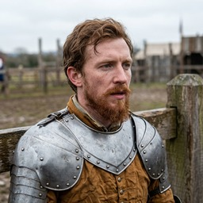
Earl of Essex. Seen at the tilt, never visited.
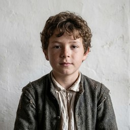
The small boy, bound to Augustine Phillips.
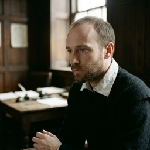
Poet of the Civil Wars. A likely source for Richard II.
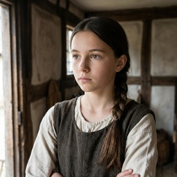
Elder daughter, twelve. Anne's right hand.
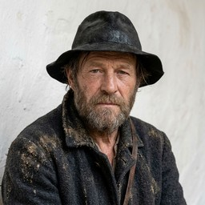
The carrier between Stratford and the Bell in Carter Lane.
Composer and organist, a neighbour in Great St Helen's.
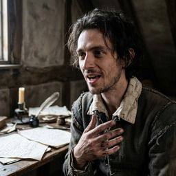
Satirist and pamphleteer. Shifting garrets.
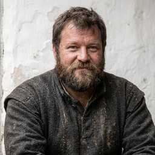
Sharer. Keeps the boy Arthur Meeks. Plays the Nurse.
Clown and sharer. First name on the warrant.
Player. Young, handsome, quick with a foil. Membership in 1595 is contested.